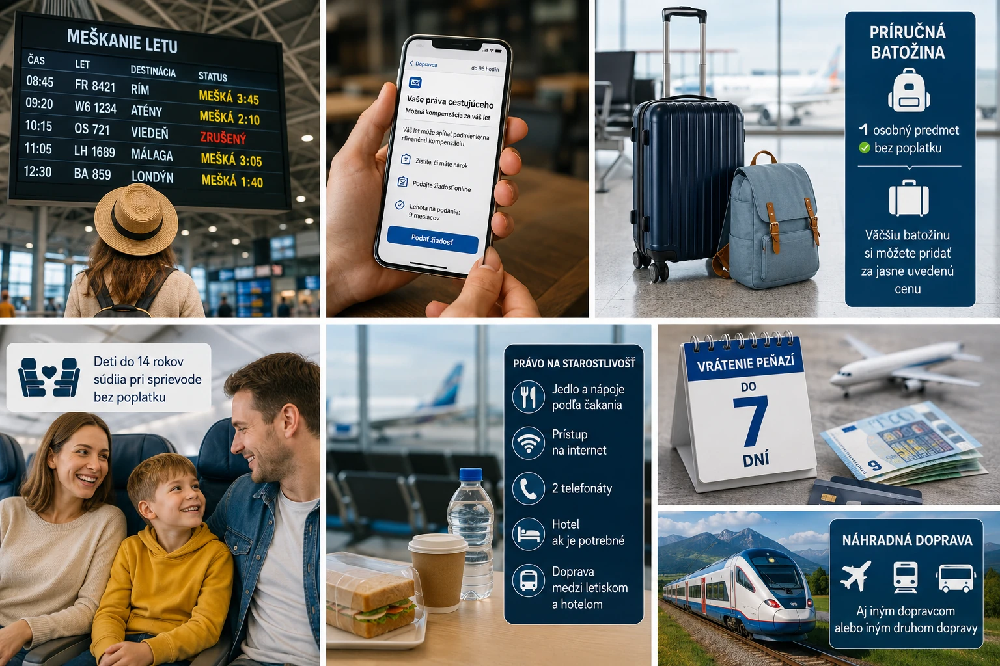

Čo bolo schválené a kedy
Reforma mení známe európske nariadenie č. 261/2004, ktoré upravuje práva cestujúcich pri meškaní, zrušení letu alebo odmietnutí nástupu na palubu.
Európsky parlament schválil konečný spoločný text 7. júla 2026. Za hlasovalo 646 poslancov, 12 bolo proti a traja sa zdržali. Posledný formálny súhlas následne udelila Rada Európskej únie 13. júla 2026. Tým sa skončilo politické schvaľovanie legislatívy, ktorú Európska komisia navrhla ešte v roku 2013.
Platia už nové pravidlá?
Nie. Stav k 20. júlu 2026 je taký, že nové pravidlá sú schválené, ale cestujúci sa na ne ešte nemôžu priamo odvolávať.
Najskôr musí byť konečné nariadenie podpísané a zverejnené v Úradnom vestníku Európskej únie. Dvadsiatym dňom po zverejnení formálne nadobudne účinnosť. Samotné nové práva sa však začnú uplatňovať až o ďalších dvanásť mesiacov.
V praxi to znamená, že nové pravidlá začnú platiť pre cestujúcich 12 mesiacov a 20 dní po zverejnení nariadenia v Úradnom vestníku EÚ. Presný dátum zatiaľ nie je možné uviesť, pretože k 20. júlu ešte nebolo nariadenie v Úradnom vestníku zverejnené.
Jednoducho povedané
Teraz: naďalej platí súčasné nariadenie EÚ č. 261/2004.
Po zverejnení: začne plynúť prechodné obdobie v trvaní jedného roka a dvadsiatich dní.
Po skončení prechodného obdobia: letecké spoločnosti, letiská a sprostredkovatelia budú musieť uplatňovať nové pravidlá.
Cestujúci, ktorému mešká alebo je zrušený let dnes, preto nemusí čakať na reformu. Svoj nárok si má uplatniť podľa pravidiel, ktoré platia v súčasnosti.
Kompenzácia od troch hodín zostáva
Jednou z najdôležitejších správ je, že Európska únia nezvýšila hranicu potrebnú na získanie finančnej kompenzácie. Počas rokovaní sa objavovali návrhy, podľa ktorých by cestujúci dostal kompenzáciu až pri štvor- alebo šesťhodinovom meškaní. Konečný text však zachováva hranicu troch hodín.
Cestujúci môže mať nárok na kompenzáciu, ak:
- do konečnej destinácie priletí s meškaním dlhším ako tri hodiny,
- bol let zrušený menej ako 14 dní pred plánovaným odletom,
- mu bol proti jeho vôli odmietnutý nástup na palubu.
Výška kompenzácie zostáva:
- 250 eur pri cestách do 1 500 kilometrov,
- 400 eur pri letoch v rámci EÚ nad 1 500 kilometrov a ostatných cestách od 1 500 do 3 500 kilometrov,
- 600 eur pri ostatných dlhších cestách.
Pri najdlhších letoch môže dopravca znížiť kompenzáciu zo 600 na 300 eur, pokiaľ cestujúci dorazí do cieľa najviac o štyri hodiny neskôr.
Čo to znamená pre cestovateľa
Trojhodinová hranica ani sumy 250, 400 a 600 eur nie sú novým právom. Ide o zachovanie súčasnej úrovne ochrany a jej jasnejšie zapísanie do aktualizovaného nariadenia.
Nárok zároveň nevznikne automaticky pri každom meškaní. Letecká spoločnosť môže kompenzáciu odmietnuť napríklad vtedy, keď preukáže mimoriadne okolnosti, ktoré nemohla ovplyvniť ani im zabrániť primeranými opatreniami.
Jednoduchšia žiadosť o kompenzáciu
Jedna z najväčších praktických zmien sa týka komunikácie s leteckou spoločnosťou.
Ak môže mať cestujúci nárok na kompenzáciu, dopravca mu bude musieť najneskôr do 96 hodín od ukončenia cesty elektronicky poslať:
- informáciu o možnom nároku,
- vysvetlenie príslušných práv,
- jasný postup podania žiadosti.
Cestujúci nebude môcť byť nútený vytvoriť si používateľský účet alebo nainštalovať špeciálnu aplikáciu len preto, aby získal informácie potrebné na uplatnenie nároku.
Na podanie žiadosti o kompenzáciu bude mať cestujúci deväť mesiacov od dátumu odletu uvedeného na letenke. Letecká spoločnosť bude musieť prijatie žiadosti okamžite potvrdiť a do 30 kalendárnych dní:
- kompenzáciu zaplatiť, alebo
- poslať konkrétne a odôvodnené zamietnutie.
Ak sa dopravca odvolá na mimoriadne okolnosti, nebude stačiť iba všeobecné tvrdenie o počasí, štrajku alebo technických problémoch. Bude musieť vysvetliť, čo sa stalo, ako daná udalosť ovplyvnila konkrétny let a aké primerané opatrenia urobil.
Vrátenie peňazí do siedmich dní
Pri zrušenom alebo výrazne narušenom lete si bude môcť cestujúci vybrať medzi vrátením peňazí a náhradnou dopravou.
Ak sa rozhodne pre vrátenie ceny letenky, dopravca má peniaze poslať automaticky do siedmich kalendárnych dní od voľby cestujúceho. Refundácia má zahŕňať cenu nevyužitých častí cesty a v príslušných prípadoch aj sprostredkovateľské poplatky.
Peniaze majú byť štandardne vrátené bankovým prevodom. Iný spôsob, napríklad voucher, bude možný len s výslovným súhlasom cestujúceho.
Voucher nebude možné cestujúcemu nanútiť
Voucher bude môcť mať platnosť najviac 12 mesiacov. Po dohode cestujúceho s dopravcom ho bude možné raz predĺžiť, najviac o ďalších 12 mesiacov.
Ak cestujúci voucher nevyužije alebo z neho zostane nevyčerpaná suma, dopravca bude musieť zvyšok automaticky vrátiť, spravidla do siedmich dní po skončení jeho platnosti.
Náhradný let aj cez inú spoločnosť alebo iné letisko
Pri zrušení alebo vážnom narušení letu nebude môcť dopravca cestujúcemu ponúkať iba vlastné najbližšie spojenie.
Náhradná doprava môže zahŕňať:
- let inej leteckej spoločnosti,
- odlet alebo prílet na alternatívne letisko,
- iný vhodný druh dopravy, napríklad vlak alebo autobus.
Dopravca musí zaplatiť aj primeraný presun medzi pôvodným a náhradným letiskom. Náhradná cesta má byť za porovnateľných podmienok a čo najbližšie pôvodnému času a spôsobu cestovania.
Keď dopravca do troch hodín nič vhodné neponúkne
Ak letecká spoločnosť do troch hodín neponúkne primerané náhradné spojenie, cestujúci si ho môže zabezpečiť sám.
Dopravca bude povinný uhradiť nevyhnutné, rozumné a primerané náklady až do výšky 400 percent pôvodnej ceny letenky. Cestujúci však musí spoločnosť informovať, že si náhradnú cestu zabezpečuje sám, a mal by si odložiť všetky doklady o platbe.
To neznamená, že náhradný let musí fyzicky odletieť do troch hodín. Dopravca musí do troch hodín ponúknuť vhodné riešenie.
Presnejšie pravidlá pre jedlo, nápoje a hotel
Nové nariadenie podrobnejšie stanovuje, čo má cestujúci počas čakania dostať.
Dopravca bude musieť bezplatne zabezpečiť:
- občerstvenie každé dve hodiny,
- jedlo po troch hodinách čakania a potom každých päť hodín, najviac tri jedlá denne,
- prístup na internet,
- dva telefonické hovory,
- hotel a dopravu medzi letiskom a hotelom, ak je potrebné prenocovanie.
Ak letecká spoločnosť pomoc neposkytne, cestujúci si môže primerané jedlo alebo ubytovanie zaplatiť sám. Dopravca má nevyhnutné a primerané náklady uhradiť do 14 kalendárnych dní od prijatia žiadosti.
Pri mimoriadnych okolnostiach, ako je vážne nepriaznivé počasie alebo bezpečnostná kríza, bude môcť dopravca obmedziť poskytované hotelové ubytovanie na tri noci.
Toto obmedzenie sa nebude vzťahovať na viaceré skupiny cestujúcich so špecifickými potrebami, napríklad osoby so zdravotným postihnutím alebo zníženou pohyblivosťou, tehotné ženy, dojčatá, maloletých bez sprievodu a ich sprevádzajúce osoby.
Voda a nabíjanie na letiskách
Správcovia letísk s komerčnou osobnou dopravou v EÚ budú musieť vytvoriť podmienky na bezplatný prístup k pitnej vode a nabíjacím miestam pre elektronické zariadenia, bez ohľadu na čas alebo terminál.
Nové pravidlo pri dlhom čakaní v lietadle
Ak cestujúci zostane v lietadle stojacom na ploche, dopravca bude musieť zabezpečiť primerané vykurovanie alebo chladenie kabíny, prístup k toaletám a podľa možností aj pitnú vodu.
Keď čakanie na ploche dosiahne dve hodiny, lietadlo má prejsť k bráne alebo k inému vhodnému miestu a cestujúcim má byť umožnené vystúpiť. Výnimkou budú bezpečnostné, imigračné alebo prevádzkové dôvody či pokyny riadenia letovej prevádzky.
Lepšia ochrana pri zmeškanom prestupe
Pri letoch rezervovaných v rámci jednej zmluvy alebo jednej spoločnej rezervácie bude dopravca zodpovedný za náhradnú dopravu a potrebnú pomoc, ak cestujúci pre narušenie prvého letu zmešká nasledujúce spojenie.
Ak dopravca nedokáže zabezpečiť pokračovanie cesty do piatich hodín od plánovaného odletu zmeškaného spoja, musí ponúknuť aj možnosť vrátenia peňazí.
Ak cestujúci dorazí do konečného cieľa o viac než tri hodiny neskôr, môže mať nárok aj na finančnú kompenzáciu. Toto pravidlo sa však týka prepojených letov na jednej rezervácii, nie samostatne kúpených leteniek.
Deti budú sedieť pri sprievode bez príplatku
Dieťa mladšie ako 14 rokov a osoba, ktorá ho sprevádza v rámci rovnakej rezervácie, dostanú možnosť sedieť na susedných sedadlách bez dodatočného poplatku.
Rovnaké právo sa bude vzťahovať aj na sprevádzajúce osoby cestujúcich so zdravotným postihnutím alebo zníženou pohyblivosťou a na sprevádzanie tehotnej cestujúcej so špecifickou potrebou pomoci.
Nie je to však absolútna záruka v situácii, keď už vedľa seba nie sú žiadne voľné sedadlá. V takom prípade sa bude musieť dopravca pokúsiť nájsť riešenie a pomôcť cestujúcim získať susedné miesta.
Pre rodiny je podstatné, že letecká spoločnosť nebude môcť podmieňovať spoločné sedenie povinným nákupom plateného výberu sedadiel.

Čo sa mení pri príručnej batožine
Pravidlá o batožine patria medzi najčastejšie nesprávne interpretované časti reformy.
Osobný predmet bude bez príplatku
Každý cestujúci bude mať právo vziať si do kabíny bez dodatočného poplatku jeden osobný predmet, napríklad malý ruksak, kabelku alebo tašku.
Konečné nariadenie však neurčuje jeden spoločný európsky rozmer ani hmotnosť takéhoto predmetu. Letecké spoločnosti budú musieť svoje povolené rozmery, hmotnosť a počet kusov jasne uvádzať pri rezervácii.
Väčší kabínový kufor nebude automaticky v každej najlacnejšej letenke
Letecké spoločnosti, sprostredkovatelia a vyhľadávacie portály budú musieť ešte pred začiatkom rezervácie štandardne zobrazovať cenu tarify, ktorá zahŕňa aj príručnú batožinu do hornej priehradky.
Dopravcovia však budú môcť naďalej ponúkať lacnejšiu tarifu cestujúcim, ktorí sa dobrovoľne rozhodnú cestovať bez takéhoto kufríka.
Pre cestovateľa to znamená:
- malý osobný predmet bude bez príplatku,
- cena s väčšou príručnou batožinou má byť zobrazená jasne a vopred,
- najlacnejší tarif nemusí obsahovať klasický kabínový kufor,
- EÚ nezavádza jeden univerzálny rozmer kabínovej batožiny pre všetky aerolinky.
Ak sa batožina pre nedostatok miesta v kabíne musí pri bráne presunúť do podpalubia, cestujúci za to nebude platiť ďalší poplatok.
Spiatočný let už dopravca nebude môcť zrušiť
Ak si cestujúci kúpi spiatočnú letenku a nevyužije let tam, dopravca mu nebude môcť iba z tohto dôvodu zrušiť let späť ani účtovať dodatočný poplatok.
Nové pravidlo sa týka spiatočných letov patriacich pod tú istú prepravnú zmluvu. Ide o zákaz takzvanej politiky „no-show“, pri ktorej niektoré spoločnosti automaticky rušili zvyšok rezervácie po nevyužití prvého úseku.
Bezplatná oprava chyby v mene
Cestujúci bude mať právo aspoň na jednu bezplatnú opravu preklepu v mene alebo administratívnu aktualizáciu mena, ak o ňu požiada najneskôr 48 hodín pred plánovaným odletom.
Pravidlo sa nebude vzťahovať na prevod letenky na úplne inú osobu.
Palubný lístok bez povinnej aplikácie
Po vykonaní check-inu bude mať cestujúci právo získať digitálny palubný lístok bez povinnosti vytvoriť si používateľský účet alebo inštalovať osobitnú aplikáciu.
Dopravca zároveň nebude môcť odmietnuť nástup iba preto, že cestujúci použil vlastnú, čitateľne vytlačenú verziu digitálne vydaného palubného lístka. Ak už cestujúci check-in vykonal, spoločnosť mu nebude môcť účtovať dodatočný poplatok za vytlačenie palubného lístka.
Toto pravidlo však automaticky neruší prípadný poplatok za vykonanie samotného check-inu na letisku. Bezplatná tlač sa viaže na situáciu, keď už bol cestujúci riadne zaregistrovaný na let.
Mimoriadne okolnosti: dopravca bude musieť predložiť dôkazy
Aktualizované nariadenie obsahuje neúplný zoznam udalostí, ktoré môžu predstavovať mimoriadne okolnosti. Patria medzi ne napríklad:
- prírodné katastrofy,
- vojna alebo vážna bezpečnostná situácia,
- nepriaznivé počasie,
- nedisciplinovaní alebo nebezpeční cestujúci,
- štrajky letísk,
- štrajky riadenia letovej prevádzky,
- štrajky poskytovateľov pozemnej obsluhy.
Samotný výskyt takejto udalosti však nebude automatickým dôvodom na odmietnutie kompenzácie. Letecká spoločnosť bude musieť preukázať priamu príčinnú súvislosť medzi mimoriadnou okolnosťou a konkrétnym meškaním, zrušením alebo zmeškaným prestupom. Zároveň musí dokázať, že prijala všetky primerané opatrenia, ktoré od nej bolo možné očakávať.
Aj keď pre mimoriadne okolnosti nevznikne nárok na finančnú kompenzáciu, dopravca spravidla naďalej musí zabezpečiť pomoc, občerstvenie, náhradnú dopravu a podľa okolností aj ubytovanie.
Na ktoré lety sa európske práva vzťahujú
Práva cestujúcich v EÚ sa nevzťahujú iba na občanov Európskej únie. Rozhodujúce je, odkiaľ let odlieta, kam smeruje a aký dopravca ho prevádzkuje.
Ochrana sa týka:
- letov medzi letiskami v EÚ,
- letov odlietajúcich z EÚ do krajiny mimo EÚ bez ohľadu na pôvod dopravcu,
- letov prilietajúcich z krajiny mimo EÚ, ak ich prevádzkuje letecká spoločnosť z EÚ.
Napríklad let Bratislava – Egypt je chránený európskymi pravidlami aj pri mimoeurópskom dopravcovi. Pri spiatočnom lete Egypt – Bratislava sa európske pravidlá uplatnia, ak let prevádzkuje dopravca z EÚ.
Čo si má cestujúci zapamätať
Nové pravidlá prinášajú silnejšiu ochranu, ale väčšina z nich začne platiť až viac ako rok po zverejnení nariadenia v Úradnom vestníku EÚ.
Najdôležitejšie zmeny budú:
- zachovanie kompenzácie od trojhodinového meškania,
- pokyny k žiadosti od dopravcu do 96 hodín,
- deväťmesačná lehota na podanie žiadosti,
- rozhodnutie dopravcu do 30 dní,
- vrátenie peňazí do siedmich dní,
- možnosť vlastnej náhradnej cesty, ak dopravca do troch hodín nič vhodné neponúkne,
- bezplatné susedné sedadlo pre dieťa mladšie ako 14 rokov a jeho sprievod,
- jeden osobný predmet bez príplatku,
- transparentnejšia cena tarify s príručnou batožinou,
- ochrana spiatočného letu aj po nevyužití letu tam,
- bezplatná oprava chyby v mene,
- digitálny alebo vytlačený palubný lístok bez povinnej aplikácie.
Presný dátum začatia uplatňovania zatiaľ nie je známy. Článok bude potrebné aktualizovať po zverejnení nariadenia v Úradnom vestníku Európskej únie.
Oficiálne zdroje
Článok vychádza z konečného znenia schváleného nariadenia, informácií Európskeho parlamentu, Rady Európskej únie, Európskej komisie a legislatívneho prehľadu EUR-Lex.